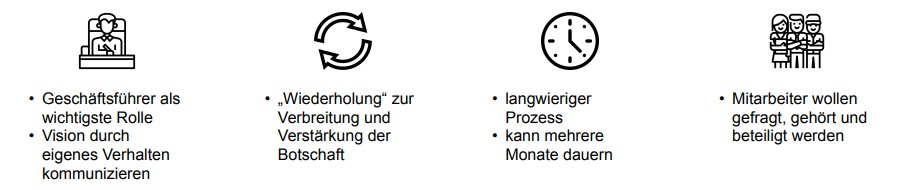

Jeder Veränderungsprozess führt zu Fragen und Sorgen bei den Betroffenen (Stolzenberg, Heberle, 2013, S.12) und kann durch unzureichende Informationen sowie Ungereimtheiten zu Widerständen und sogar zum Scheitern der Umsetzung führen. Aus diesem Grund spielt die Art und Weise der Kommunikation eine wesentliche Rolle. Hierbei sollte auf eine offene, transparente und ehrliche Kommunikation gesetzt werden, welche möglichst frei von Inkonsistenzen ist und jegliche Fragen zu der Notwendigkeit und den Zielen dieser Veränderung beantwortet.
(Stouten, Rousseau, De Cremer, 2018, S. 760f)
